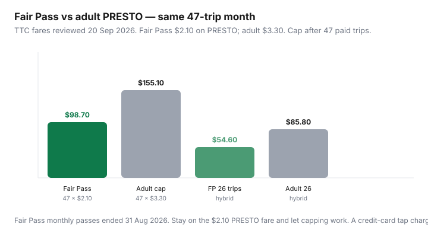

Transportation · Canada
How to check if you qualify for Toronto’s Fair Pass transit discount—and use it with fare capping
Fair Pass is the City of Toronto discount that turns the adult TTC PRESTO fare from $3.30 into $2.10 — 36% off each paid ride — for eligible low-income residents aged 20–64. Since 1 Sep 2026 there is no Fair Pass monthly pass. The discount rides along on pay-as-you-go and then caps at $98.70 after 47 paid trips on the same PRESTO card. Eligible people still leave that money on the table because the application, the PRESTO load, and the cap live on three different websites.
This is how to apply, how Fair Pass interacts with 2026 monthly fare capping, and what it does not cover. Pair it with TTC capping vs the 12-Month and the pass calculator.
Key takeaways
- You must live in the City of Toronto, be 20–64, hold a PRESTO card number, and meet the low-income test (after-tax family income below 75% of LIM-AT) or be on OW, ODSP, or Toronto Child Care Fee Subsidy.
- Apply at toronto.ca/transitdiscount or 416-338-8888. The discount is programmed onto PRESTO for 12 months. Single Fair Pass fare is $2.10.
- Fair Pass monthly passes ended 31 Aug 2026. Capping is automatic: 47 × $2.10 = $98.70 if you tap the same PRESTO all month. Debit/credit charges adult $3.30 and wastes the program.
- Fair Pass is TTC and Wheel-Trans. It is not a GO, MiWay, or YRT discount. One Fare regional transfers are a different rule.
- Annual eligibility reviews resumed 1 Aug 2026. OW/ODSP/CCFS clients are often renewed from City records; others should watch the 45-day expiry email.
Who Fair Pass is for and income eligibility basics
City of Toronto copy (Fair Pass Transit Discount Program, reviewed 20 Sep 2026) requires all of:
- Age 20–64 (youth and 65+ already have TTC concession fares; this program is the working-age gap).
- Residential address in the City of Toronto — not Mississauga, not Vaughan.
- A PRESTO card number (buy one, or ask Toronto Public Library branches about complimentary cards while stock lasts).
- Low income: total after-tax family income for members 18+ below 75% of Statistics Canada’s LIM-AT, or active OW, ODSP, or Toronto Children’s Services child-care fee subsidy with a program ID.
LIM-AT dollars move. An older City expansion release used examples around $20,514 after tax for a single and $41,028 for a family of four — treat those as history, not your 2026 line. Use the income table on toronto.ca/transitdiscount the week you apply. Bring T4s, notices of assessment, or the program ID the form lists. Roommates who are not your family unit should not be invented as household income, and spouses should not be omitted. The form asks for people who live with you.
Not the same as a TTC concession: Youth 13–19 ($2.35) and seniors 65+ ($2.25) set fare type on PRESTO without Fair Pass. Post-secondary students want the $128.15 monthly, not Fair Pass, unless they also meet the City income test and prefer $2.10 PAYG. Do not apply “just in case” if you are clearly over the LIM-AT line.
How to apply and load the discount on PRESTO
- Register or buy a PRESTO card. Write the card number down. A phone-wallet PRESTO is still a card number — use that one forever.
- Apply online at toronto.ca/transitdiscount (City Human Services Integration). Phone 416-338-8888 for social-assistance help, interpretation, or a paper form.
- Enter your Toronto address, email, household members, and either a program ID (OW / ODSP / CCFS) or income documents from the required-documents list.
- Keep the confirmation number from the email. Outcome arrives by email. If approved, the City programs the discount onto the PRESTO number you gave.
- Tap only that PRESTO on TTC. Confirm the reader shows the Fair Pass fare ($2.10), not $3.30, on the first ride after approval.
In-person help exists (walk-in or appointment — the City page lists current sites). Settlement agencies such as CUIAS have published walk-throughs of the 2026 review change; they are helpers, not the program. If the tap still shows $3.30 a week after approval, call the City number and PRESTO with the confirmation email in hand. Do not “just use Visa” in the meantime.
How Fair Pass interacts with 2026 monthly fare capping
TTC discontinued the Fair Pass monthly pass on 31 Aug 2026 with the other adult/youth/senior monthlies. What you have now:
- Each paid TTC trip on the Fair Pass PRESTO is $2.10.
- After 47 paid trips in a calendar month on that same card, further eligible TTC trips that month are free. Ceiling = $98.70.
- Transfers inside two hours are not extra paid trips. Cash and PRESTO Tickets never cap and never get $2.10.
- Adult 12-Month at $143 is a different product for people who are not on Fair Pass. Do not buy it to “replace” Fair Pass.

Budget impact (labelled): 40 paid trips on Fair Pass = $84.00 versus $132.00 adult PRESTO — $48 that month. A full cap month saves $56.40 versus the adult cap ($155.10 − $98.70). That is grocery money. It only happens if the discount is on the card you actually tap.
What Fair Pass does not cover (regional agencies)
Fair Pass is a TTC / Wheel-Trans poverty-reduction fare type. It does not make GO Transit, UP Express, MiWay, Brampton Transit, York Region Transit, or Durham cheaper. Ontario’s One Fare program can still zero a TTC tap after a GO tap (and the reverse in the documented window) — that free TTC boarding does not count as a paid Fair Pass trip toward 47. Regional agencies have their own low-income products (for example some 905 social-assistance passes). Apply there separately. A Vaughan address cannot use Toronto Fair Pass because you work at Union.
Renewal and documentation checklist
Annual eligibility reviews returned 1 Aug 2026 after pandemic auto-renewals. City copy:
- Active OW, ODSP, CCFS: the City tries to verify from its records and renew. You may still be contacted if the match fails. Keep member IDs current.
- Income-tested applicants: expect a new application when the 12-month window ends. The City says it notifies about 45 days before expiry using the contact on file. Update your email if you moved off Rogers.
- Keep: PRESTO number, confirmation emails, proof of Toronto address, and the same income package you used the first time (NOA, pay stubs, or program letter — whatever the live form lists).
- If you turn 65, you leave Fair Pass for the senior PRESTO fare ($2.25) — set the fare type; do not keep waiting on Fair Pass.
Budget impact for low-income GTA households
| Paid trips | Fair Pass $2.10 | Adult PRESTO $3.30 | You keep |
|---|---|---|---|
| 20 (light hybrid) | $42.00 | $66.00 | $24.00 |
| 26 (3-day office) | $54.60 | $85.80 | $31.20 |
| 40 | $84.00 | $132.00 | $48.00 |
| 47+ (capped) | $98.70 | $155.10 | $56.40 |
Over 12 months at 40 trips, that is about $576 versus adult PRESTO — if you stay approved and never tap a credit card. Autoload stored value on the Fair Pass PRESTO so you are not forced onto cash.
Where to get help if your application stalls
- City Fair Pass line: 416-338-8888 (Human Services Integration). Ask for interpretation if you need it.
- toronto.ca/transitdiscount — status language and document list. Use the confirmation number.
- Toronto Public Library PRESTO desk / complimentary card initiative (stock dependent).
- OW or ODSP caseworker if you applied with a member ID and the match failed.
- Community legal clinics or settlement agencies for document and address issues — they cannot override eligibility, but they can complete the form.
While you wait, ride the cheapest legal fare you already qualify for. Do not buy PRESTO Tickets hoping they “count later.” They will not. If you are denied, read the reason: wrong city, age, missing page of the NOA, or income over the line are different problems. Reapply when the fact changes. This is a City program, not a TTC customer-service override at a collector booth.
Sources & date stamps
- City of Toronto, Fair Pass Transit Discount Program (toronto.ca/transitdiscount), reviewed 20 Sep 2026 — age, residency, LIM-AT / OW / ODSP / CCFS, apply steps, 12-month term, $2.10, $98.70 cap note, reviews from 1 Aug 2026.
- TTC Fares and passes / Fare types and discounts, reviewed 20 Sep 2026 — Fair Pass PRESTO $2.10, monthly discontinued 31 Aug 2026, capping on the same card, cash exclusion.
- TTC monthly fare capping materials (1 Sep 2026) — 47 paid trips; open-loop is adult $3.30.
Frequently asked questions
Who qualifies for Toronto’s Fair Pass transit discount?
City of Toronto residents aged 20–64 with a PRESTO card number who are below 75% of LIM-AT after tax, or who receive Ontario Works, ODSP, or Toronto child-care fee subsidy. Confirm the live income table when you apply.
How do I apply for Fair Pass?
Apply at toronto.ca/transitdiscount or call 416-338-8888. You need a PRESTO number, a Toronto address, household details, and either a program ID or income documents. Approval is emailed; the City loads the discount onto that PRESTO.
How does Fair Pass work with TTC fare capping?
There is no Fair Pass monthly pass after 31 Aug 2026. Tap the same Fair Pass PRESTO. Each paid trip is $2.10. After 47 paid trips you ride free for the rest of that calendar month — $98.70 ceiling.
Does Fair Pass work on GO Transit or Mississauga MiWay?
No. It is a TTC and Wheel-Trans discount. Regional agencies and GO have separate fares and, sometimes, separate social-assistance products.
What if my Fair Pass application is stuck?
Use your confirmation number at 416-338-8888. OW/ODSP/CCFS clients can also ask their caseworker. Update your email for the 45-day renewal notice. Do not tap a credit card while you wait — that is the $3.30 adult fare.